e커머스 주문 수집 배치 성능 개선
목차
- 배경: 여러 커머스의 주문을 한 곳에
- 문제: 커머스 하나 추가하는 데 한 달
- 아키텍처 설계: 템플릿 메소드 패턴 선택 이유
- 핵심 구현 1: 템플릿 메소드 패턴으로 코드 중복 제거
- 또 다른 문제: 배치 성능
- 핵심 구현 2: 판매자별 비동기 병렬 처리
- 핵심 구현 3: 벌크 처리로 DB 라운드트립 최적화
- 결과: 신규 커머스 추가 한 달→2~3주, 처리 시간 30분→3분
배경: 여러 커머스의 주문을 한 곳에
카카오 i LaaS의 OMS(주문 관리 시스템)는 여러 외부 커머스의 주문을 통합 관리합니다. 위메프, 롯데ON, TMON 등 5개 커머스에서 발생한 주문을 5분 주기로 수집하여 DB에 저장하고, 통합 대시보드에서 실시간 현황을 제공합니다.
각 커머스별 배치는 여러 판매자의 API Key를 통해 주문 데이터를 수집합니다. 하나의 커머스에 수십 개의 판매자가 등록되어 있으며, 판매자마다 개별 API Key로 인증하여 주문을 조회합니다.
서비스가 성장하면서 두 가지 압박이 동시에 들어왔습니다. 첫째, 사업 확장으로 신규 커머스 연동 요청이 연이어 들어왔지만 기존 구조로는 추가에 한 달 이상이 걸렸고, 둘째, 판매자 수와 주문량이 늘면서 기존 배치가 5분 주기를 지키지 못하는 커머스가 생겼습니다. 이 두 문제를 함께 해결해야 했습니다.
문제: 커머스 하나 추가하는 데 한 달
신규 커머스를 연동하려면 수집 배치를 처음부터 개발해야 했습니다. 커머스마다 인증 방식, API 응답 포맷, 파싱 로직이 달랐지만, 공통 플로우(인증 → 조회 → 파싱 → 저장)는 동일했습니다. 그럼에도 코드를 재사용할 수 있는 구조가 아니었습니다.
1. 코드 중복 (70% 수준)
기존에는 커머스별로 각각 다른 개발자가 담당했기 때문에, 공통 플로우임에도 구현 방식이 제각각이었습니다. 거의 동일한 로직을 중복 구현하고 있었고, 각 커머스 수집 클래스가 1,000줄 이상의 코드를 포함하고 있었습니다.
아래 코드는 이해를 돕기 위한 예시 코드입니다.
// 위메프 배치
public void collectWemepOrders() {
for (String apiKey : wemepApiKeys) {
// 1. 인증
String token = authenticateWemep(apiKey);
// 2. API 호출
String response = callWemepAPI(token);
// 3. 파싱
List<Order> orders = parseWemepResponse(response);
// 4. 저장
saveOrders(orders);
}
}
// 롯데ON 배치 (거의 동일한 구조)
public void collectLotteOrders() {
for (String apiKey : lotteApiKeys) {
String token = authenticateLotte(apiKey);
String response = callLotteAPI(token);
List<Order> orders = parseLotteResponse(response);
saveOrders(orders);
}
}
// TMON, 쿠팡, 11번가... 계속 반복2. 신규 커머스 추가 시간 (한 달)
기존 배치 구조가 통일되어 있지 않아 새로운 커머스를 추가하려면 처음부터 전체 로직을 구현해야 했습니다.
- API 문서 분석 (3일)
- 인증 로직 구현 (2일)
- 수집/파싱 로직 구현 (1주)
- 테스트 및 버그 수정 (2주)
- 배포 및 안정화 (3일)
합계: 약 한 달
코드 중복을 해결하고, 신규 커머스를 추가할 때 어떤 부분만 개발하면 되는지 코드 레벨에서 정립하기 위해 디자인 패턴 도입을 검토했습니다.
아키텍처 설계: 템플릿 메소드 패턴 선택 이유
기존 배치 플로우 분석
커머스별 배치는 모두 동일한 큰 흐름을 따르고 있었습니다. 판매처 목록을 조회한 뒤, 각 판매처별로 반복하며 주문을 수집하고, 마지막에 데이터를 적재하는 구조입니다.
graph TB
subgraph 공통["공통 플로우"]
A["1. 판매처 API Key 목록 조회"] --> B
subgraph 커머스별["판매처별 반복 — 커머스별 구현"]
B["2-1. 인증 처리"] --> C["2-2. 주문 데이터 조회"]
C --> D["2-3. 파싱 및 처리"]
end
D --> E["3. 데이터 적재"]
end
style 커머스별 fill:#f9826c22,stroke:#f9826c
style 공통 fill:#58a6ff11,stroke:#58a6ff크게 3단계로 나뉘는데, 앞(키 목록 조회)과 뒤(데이터 적재)는 모든 커머스가 동일하고, 가운데 3개 단계(인증 → 조회 → 파싱)만 커머스별로 구현이 달랐습니다. 즉, 커머스별로 실제 개발이 필요한 부분은 가운데뿐이었습니다.
디자인 패턴 비교
| 패턴 | 장점 | 단점 | 적합성 |
|---|---|---|---|
| Strategy | 런타임 교체 가능 | 단계별 Strategy 객체를 각각 만들고 조합해야 함 | 낮음 |
| Factory | 객체 생성 유연 | 플로우 자체를 재사용할 수 없음 | 낮음 |
| Template Method | 플로우 고정 + 단계별 구현 분리 | 상속 필요 | 높음 |
템플릿 메소드 선택 이유:
핵심은 "플로우는 동일하고, 각 단계의 구현만 다르다"는 점이었습니다.
- 플로우 고정: 공통 플로우(키 조회 → 수집 → 적재)를 상위 클래스의
final메서드로 고정하여 커머스별로 플로우가 달라질 여지를 차단 - 구현만 분리: 커머스별로 달라지는 가운데 3단계(인증, 조회, 파싱)를 추상 메서드로 분리
- 컴파일 타임 강제: 추상 메서드를 구현하지 않으면 컴파일 에러가 발생하므로, 신규 커머스 추가 시 무엇을 개발해야 하는지 코드가 알려줌
- 항상 함께 변경: 한 커머스의 인증/조회/파싱은 항상 세트로 사용됩니다. Strategy처럼 단계별로 분리할 필요 없이, 하나의 클래스에서 함께 관리하는 것이 자연스러움
Strategy를 선택하지 않은 이유:
Strategy 패턴은 런타임에 알고리즘을 교체해야 할 때 적합합니다. 하지만 이 시스템에서는 위메프의 인증을 롯데ON의 파서와 조합하는 일이 없습니다. 커머스별 구현은 항상 하나의 단위로 움직이므로, 단계별 Strategy 객체를 만들고 조합하는 것은 불필요한 복잡도만 추가합니다.
핵심 구현 1: 템플릿 메소드 패턴으로 코드 중복 제거
추상 클래스 정의
배치의 단계를 명확히 나누고, 커머스별로 상이한 부분만 추상화하여 개별 구현하도록 했습니다.
CommerceCollector (추상 클래스):
아래 코드는 핵심 구조를 설명하기 위한 예시 코드입니다.
public abstract class CommerceCollector {
// 템플릿 메소드 (플로우 정의)
public final void collect() {
List<String> apiKeys = getApiKeys();
List<Order> allOrders = new ArrayList<>();
for (String apiKey : apiKeys) {
// 1. 인증 처리 (커머스별 상이)
String token = authenticate(apiKey);
// 2. 주문 데이터 조회 (커머스별 상이)
String response = fetchOrders(token);
// 3. 파싱 및 처리 (커머스별 상이)
List<Order> orders = parseResponse(response);
// 4. 데이터 적재 (공통 로직 - 건별 저장)
for (Order order : orders) {
Address address = personalInfoDb.save(order.getAddress());
order.setAddressId(address.getId());
orderDb.save(order);
}
allOrders.addAll(orders);
}
log.info("{} collected {} orders from {} sellers",
getName(), allOrders.size(), apiKeys.size());
}
// 커머스별로 구현해야 하는 추상 메서드
protected abstract String authenticate(String apiKey);
protected abstract String fetchOrders(String token);
protected abstract List<Order> parseResponse(String response);
protected abstract List<String> getApiKeys();
public abstract String getName();
}구체적 구현 (위메프)
WemepCollector:
@Component
public class WemepCollector extends CommerceCollector {
@Override
protected String authenticate(String apiKey) {
// OAuth 인증
return restTemplate.postForObject(
"https://api.wemep.com/oauth/token",
new OAuth2Request(apiKey, clientSecret),
TokenResponse.class
).getAccessToken();
}
@Override
protected String fetchOrders(String token) {
HttpHeaders headers = new HttpHeaders();
headers.setBearerAuth(token);
return restTemplate.exchange(
"https://api.wemep.com/orders",
HttpMethod.GET,
new HttpEntity<>(headers),
String.class
).getBody();
}
@Override
protected List<Order> parseResponse(String response) {
// JSON 파싱
WemepOrderResponse res = objectMapper.readValue(
response, WemepOrderResponse.class);
return res.getOrders().stream()
.map(this::transformToEntity)
.collect(Collectors.toList());
}
@Override
protected List<String> getApiKeys() {
return sellerRepository.findApiKeysByCommerce("WEMEP");
}
@Override
public String getName() {
return "WEMEP";
}
}다른 커머스 구현 (롯데ON)
LotteCollector:
@Component
public class LotteCollector extends CommerceCollector {
@Override
protected String authenticate(String apiKey) {
// API Key 인증 (OAuth와 다름)
return apiKey;
}
@Override
protected String fetchOrders(String apiKey) {
// XML 응답 (JSON과 다름)
HttpHeaders headers = new HttpHeaders();
headers.set("X-API-KEY", apiKey);
return restTemplate.exchange(
"https://api.lotteon.com/orders.xml",
HttpMethod.GET,
new HttpEntity<>(headers),
String.class
).getBody();
}
@Override
protected List<Order> parseResponse(String response) {
// XML 파싱 (JSON과 다름)
Document doc = DocumentBuilderFactory.newInstance()
.newDocumentBuilder()
.parse(new InputSource(new StringReader(response)));
NodeList orderNodes = doc.getElementsByTagName("order");
List<Order> orders = new ArrayList<>();
for (int i = 0; i < orderNodes.getLength(); i++) {
Element orderEl = (Element) orderNodes.item(i);
orders.add(transformToEntity(orderEl));
}
return orders;
}
@Override
protected List<String> getApiKeys() {
return sellerRepository.findApiKeysByCommerce("LOTTE");
}
@Override
public String getName() {
return "LOTTE";
}
}코드 재사용 효과
Before:
- WemepCollector: 200줄
- LotteCollector: 180줄
- TmonCollector: 190줄
- 합계: 570줄
After:
- CommerceCollector (추상): 50줄
- WemepCollector: 60줄
- LotteCollector: 50줄
- TmonCollector: 55줄
- 합계: 215줄 (62% 감소)구조 개선 결과
추상 클래스만 보면 주문 수집의 전체 플로우를 파악할 수 있게 되었고, 신규 커머스를 추가할 때 어떤 메서드를 구현해야 하는지 컴파일 타임에 명확하게 알 수 있었습니다. 이에 따라 개발자들이 커머스별 API 연동과 데이터 처리 로직에 집중할 수 있게 되었고, 신규 커머스 추가 기간이 한 달에서 2주로 단축되었습니다.
또 다른 문제: 배치 성능
구조 문제 외에도 성능 문제가 존재했습니다. 템플릿 메소드 패턴으로 각 단계가 분리되면서, 단계별 로그를 찍어 병목 지점을 확인할 수 있었습니다. 5분마다 수집해야 하는데, 주문이 20,000건 이상인 커머스는 한 번 배치에 30분이 걸리고 있었습니다. 수집 주기의 6배를 초과하는 지연이었습니다.
1. 순차적 API 호출로 인한 HTTP 대기 시간
주문 수집 API 호출이 동기적으로 진행되어 불필요한 HTTP 대기 시간이 발생하고 있었습니다. 계정(API Key)이 N개라면 N번의 호출이 순차적으로 완료될 때까지 대기하는 구조였습니다.
[위메프 배치]
판매자 A 수집 (3분) → 판매자 B 수집 (2분) → 판매자 C 수집 (4분) → ...
→ 전체 판매자 순차 처리 합계: 30분2. 주문 건별 DB I/O
주문 한 건마다 배송지를 추출하여 개인정보 DB에 저장하고, 채번된 배송지 ID를 받아와 주문 DB에 주문 정보를 저장하는 구조였습니다. 주문 건별로 2번의 DB I/O가 발생하고 있었습니다.
for (Order order : orders) {
// 1. 배송지 추출 → 개인정보 DB 저장 → ID 채번
Address address = personalInfoDb.save(order.getAddress());
// 2. 채번된 배송지 ID로 주문 DB 저장
order.setAddressId(address.getId());
orderDb.save(order);
}
// 주문 10,000건 → DB I/O 20,000번핵심 구현 2: 판매자별 비동기 병렬 처리
순차 처리 vs 병렬 처리
핵심 구현 1에서 정리한 collect() 메서드는 판매자별로 순차 처리하는 구조였습니다.
Before (판매자별 순차):
// CommerceCollector.collect() 내부
for (String apiKey : apiKeys) {
String token = authenticate(apiKey); // 인증
String response = fetchOrders(token); // API 호출 (느림)
List<Order> orders = parseResponse(response);
for (Order order : orders) { // 건별 DB 저장
Address address = personalInfoDb.save(order.getAddress());
order.setAddressId(address.getId());
orderDb.save(order);
}
}
// 판매자 20개 × 평균 1.5분 = 30분After (판매자별 병렬):
CompletableFuture는 기본적으로 ForkJoinPool.commonPool()을 사용합니다. 하지만 ForkJoinPool은 CPU 연산을 재귀적으로 분할하는 작업에 최적화된 풀로, 기본 스레드 수가 CPU 코어 - 1개입니다. 외부 API 호출처럼 I/O 대기가 대부분인 작업에서는 스레드가 응답을 기다리며 블로킹되어 풀 전체가 고갈될 수 있습니다. 또한 common pool은 JVM 전체에서 공유되어 다른 비동기 작업에도 영향을 줍니다.
이를 방지하기 위해 Spring의 TaskExecutor를 별도 빈으로 등록하여, I/O 대기 시간을 고려한 충분한 스레드 수(10개)를 가진 배치 전용 스레드 풀을 분리했습니다.
@Configuration
public class BatchConfig {
@Bean("commerceTaskExecutor")
public TaskExecutor commerceTaskExecutor() {
ThreadPoolTaskExecutor executor = new ThreadPoolTaskExecutor();
executor.setCorePoolSize(10);
executor.setMaxPoolSize(10);
executor.setThreadNamePrefix("commerce-");
executor.initialize();
return executor;
}
}// CommerceCollector.collect() 내부 - 판매자별 전체 플로우를 병렬 처리
List<CompletableFuture<Void>> futures = apiKeys.stream()
.map(apiKey -> CompletableFuture.runAsync(
() -> {
try {
String token = authenticate(apiKey);
String response = fetchOrders(token);
List<Order> orders = parseResponse(response);
for (Order order : orders) {
Address address = personalInfoDb.save(order.getAddress());
order.setAddressId(address.getId());
orderDb.save(order);
}
} catch (Exception e) {
log.error("Failed: {} - {}", getName(), apiKey, e);
}
},
taskExecutor
))
.collect(Collectors.toList());
// 모든 판매자 완료 대기
CompletableFuture.allOf(futures.toArray(new CompletableFuture[0])).join();
// 판매자 20개 병렬 → 가장 느린 판매자 기준 약 2분핵심 구현 3: 벌크 처리로 DB 라운드트립 최적화
분산 DB 구조
주문 데이터는 개인정보 보호를 위해 분산 DB 구조로 저장됩니다.
개인정보 DB: 배송지 데이터 (주소, 수령인 등)
주문 DB: 주문 정보 (상품, 금액, 상태 등)주문을 저장하려면 먼저 개인정보 DB에 배송지를 저장하고, 채번된 배송지 ID(FK)를 주문 DB의 주문 데이터에 매핑해야 합니다.
문제: 주문 10,000건 = DB 라운드트립 20,000번
기존 방식은 주문 하나를 처리할 때마다 2번의 DB I/O가 발생했습니다.
// 기존 방식 (주문 하나씩 처리)
for (Order order : orders) {
// 1. 개인정보 DB - 배송지 저장
Address address = personalInfoDb.save(order.getAddress());
// 2. 주문 DB - 주문 정보 저장 (배송지 FK 매핑)
order.setAddressId(address.getId());
orderDb.save(order);
}
// 주문 10,000건 → DB 라운드트립 20,000번해결: PreparedStatement 벌크 INSERT로 전환
JPA의 IDENTITY ID 생성 전략에서는 배치 INSERT가 비활성화되므로, JPA의 saveAll()을 사용할 수 없었습니다. 이를 우회하기 위해 PreparedStatement로 벌크 INSERT 로직을 직접 구현했습니다.
public void saveOrdersBulk(List<Order> orders) {
String batchUuid = UUID.randomUUID().toString();
// 1. 개인정보 DB - 배송지 벌크 저장 (PreparedStatement)
List<Address> addresses = orders.stream()
.map(Order::getAddress)
.collect(Collectors.toList());
for (int i = 0; i < addresses.size(); i++) {
addresses.get(i).setBatchUuid(batchUuid);
addresses.get(i).setSequence(i);
}
bulkInsertAddresses(addresses); // PreparedStatement batch execute
// 2. 개인정보 DB - 저장된 배송지 조회
List<Address> savedAddresses = personalInfoDb
.findByBatchUuidOrderBySequence(batchUuid);
// 3. 주문 DB - FK 매핑 후 벌크 저장 (PreparedStatement)
for (int i = 0; i < orders.size(); i++) {
orders.get(i).setAddressId(savedAddresses.get(i).getId());
}
bulkInsertOrders(orders); // PreparedStatement batch execute
}private void bulkInsertAddresses(List<Address> addresses) {
jdbcTemplate.execute((Connection conn) -> {
String sql = "INSERT INTO address (batch_uuid, sequence, recipient, address, ...) "
+ "VALUES (?, ?, ?, ?, ...)";
try (PreparedStatement ps = conn.prepareStatement(sql)) {
for (Address addr : addresses) {
ps.setString(1, addr.getBatchUuid());
ps.setInt(2, addr.getSequence());
ps.setString(3, addr.getRecipient());
ps.setString(4, addr.getAddress());
ps.addBatch();
}
ps.executeBatch();
}
return null;
});
}
// 주문 10,000건 처리도 "저장 로직 기준 3단계"로 단순화재실행 멱등성: 주문 DB는 UPSERT로 처리
배치는 네트워크 장애나 외부 API 지연으로 재실행이 자주 발생할 수 있어, 주문 DB 저장은 INSERT ... ON DUPLICATE KEY UPDATE 기반 UPSERT로 구성했습니다.
고유 키(commerce_code, seller_id, external_order_id) 기준으로 중복 수집 시 신규 INSERT가 아닌 UPDATE가 수행되어 중복 적재를 방지합니다.
INSERT INTO orders (
commerce_code, seller_id, external_order_id, address_id, status, amount
) VALUES (?, ?, ?, ?, ?, ?)
ON DUPLICATE KEY UPDATE
address_id = VALUES(address_id),
status = VALUES(status),
amount = VALUES(amount),
updated_at = NOW();실패 처리 전략
- 판매자 단위 격리: 한 판매자의 API 호출/파싱 실패는 해당 판매자만 실패 처리하고, 나머지 판매자는 계속 수집
- DB 저장 실패 시 재실행: UPSERT 기반이라 동일 배치를 다시 실행해도 중복 적재 없이 최신 상태로 수렴
- 주소-주문 매핑 불일치 방지:
batchUuid + sequence로 조회 범위를 고정해 동시 실행 중에도 정확한 FK 매핑 보장
벌크 INSERT 시 동시성 문제
벌크 저장 후 채번된 배송지 ID를 주문에 매핑해야 합니다. 처음에는 MySQL의 LAST_INSERT_ID()로 마지막 채번 ID를 가져온 뒤, 삽입 건수만큼 역산하여 ID 범위를 계산하는 방식을 시도했습니다.
-- 배송지 20건 벌크 INSERT 후
SELECT LAST_INSERT_ID(); -- 520
-- 501~520이 이번 배치라고 역산하지만 여러 커머스 배치가 동시에 실행되는 환경에서 이 방식은 문제가 있었습니다.
위메프 배치: 배송지 20개 저장 → LAST_INSERT_ID: 520
롯데ON 배치: 동시에 배송지 15개 저장 → LAST_INSERT_ID: 535
위메프 배치: LAST_INSERT_ID 조회 → 520 (세션 단위라 안전)
하지만 실제 ID 범위: 501~520이 아닌 중간에 롯데ON 데이터가 끼어 있을 수 있음
→ ID 역산 자체가 불안정해결: UUID + Sequence
ID 역산 대신, 배치 작업마다 고유한 UUID를 발급하고 각 배송지에 sequence를 부여하여 저장하는 방식을 채택했습니다. 조회 시 UUID로 격리하면 다른 배치의 데이터와 섞일 여지가 없습니다.
sequenceDiagram
participant W as 위메프 배치
participant DB as 개인정보 DB
participant L as 롯데ON 배치
W->>DB: bulkInsert(20건, batchUuid=A, seq=0~19)
L->>DB: bulkInsert(15건, batchUuid=B, seq=0~14)
Note over W,L: 동시 INSERT — ID 범위가 섞여도 무관
W->>DB: findByBatchUuid('A') ORDER BY seq
DB-->>W: 정확히 20건 (순서 보장)
L->>DB: findByBatchUuid('B') ORDER BY seq
DB-->>L: 정확히 15건 (순서 보장)Sequence가 필요한 이유는 벌크 INSERT 시 삽입 순서와 조회 순서가 일치한다는 보장이 없기 때문입니다.
INSERT INTO addresses VALUES (...), (...), (...);
-- 저장 순서: 1, 2, 3 (예상)
-- 실제 순서: 2, 1, 3 (가능)Sequence를 함께 저장하면 ORDER BY sequence로 정확한 순서를 보장할 수 있습니다.
결과: 신규 커머스 추가 한 달→2~3주, 처리 시간 30분→3분
Before: 순차 처리 (30분)
gantt
title 판매자 20개 순차 수집 + 건별 DB 저장
dateFormat X
axisFormat %s분
section 수집 (순차)
판매자 A 수집 :a1, 0, 90
판매자 B 수집 :a2, after a1, 120
판매자 C 수집 :a3, after a2, 60
판매자 D 수집 :a4, after a3, 90
...나머지 순차 대기 :a5, after a4, 1440
section DB 저장 (건별)
주문 10,000건 × 2회 :b1, after a5, 600After: 병렬 처리 + 벌크 저장 (3분)
gantt
title 판매자 20개 병렬 수집 + 벌크 DB 저장
dateFormat X
axisFormat %s분
section 수집 (병렬)
판매자 A 수집 :a1, 0, 90
판매자 B 수집 :a2, 0, 120
판매자 C 수집 :a3, 0, 60
판매자 D~T 수집 :a4, 0, 100
section DB 저장 (벌크)
배송지 벌크 INSERT :b1, 120, 140
배송지 ID 조회 :b2, 140, 150
주문 벌크 INSERT :b3, 150, 180개선 결과
| 지표 | Before | After | 개선률 |
|---|---|---|---|
| 코드량 (주요 모듈) | 570줄 | 215줄 | 62% 감소 |
| 신규 커머스 추가 | 한 달 | 2~3주 | 약 2배 단축 |
| 배치 처리 시간 | 30분 | 3분 | 10배 단축 |
| DB 저장 방식 | 주문당 개별 저장(2회) | 3단계 벌크 처리 | 대폭 단순화 |
배운 점
1. 디자인 패턴은 "맞는 범위"에서만 추상화해야 한다
- 템플릿 메소드 패턴으로 공통 플로우를 정리하면서 중복 제거와 온보딩 속도 개선 효과를 얻었습니다.
- 다만 커머스별 플로우가 100% 동일하지는 않아서, 변동이 큰 부분까지 무리하게 추상화하면 오히려 유지보수 비용이 커질 수 있다는 점도 배웠습니다.
- 이후에는 "안정적인 공통부만 추상화"하고, 변화가 잦은 영역은 명시적 확장 포인트로 남기는 기준을 세웠습니다.
2. ForkJoinPool과 전용 ThreadPool은 목적이 다르다
ForkJoinPool.commonPool()은 CPU 바운드 작업에는 효율적이지만, 외부 API 호출처럼 I/O 대기가 많은 작업에서는 스레드 고갈과 지연 전파가 발생하기 쉽습니다.- 배치 전용
ThreadPoolTaskExecutor를 분리하니, 스레드 수를 I/O 특성에 맞게 제어하고 다른 비동기 작업과의 간섭도 줄일 수 있었습니다. - "병렬화" 자체보다 "워크로드 특성에 맞는 풀 선택"이 더 중요하다는 걸 체감했습니다.
3. JPA saveAll()은 항상 벌크가 아니다
IDENTITY전략에서는 JPA 배치 INSERT가 비활성화되어saveAll()을 써도 기대한 벌크 효과가 나지 않았습니다.- 결국
PreparedStatement기반 벌크 INSERT로 내려가면서 성능은 확보했지만, 그만큼 SQL/매핑/에러 처리를 직접 책임져야 했습니다. - ORM 편의성과 성능 제어력 사이에서 무엇을 우선할지 명확히 결정해야 한다는 점을 배웠습니다.
4. 벌크 삽입은 강력하지만 대가가 있다
- 장점: DB 라운드트립과 커넥션 점유 시간을 크게 줄여 처리량을 높일 수 있습니다.
- 단점: 실패 지점 분석, 재시도 전략, 배치 크기 튜닝, 메모리 사용량 관리 등 운영 복잡도가 함께 증가합니다.
- 특히 분산 DB에서 FK 매핑이 필요한 경우,
UUID + sequence같은 정합성 장치를 반드시 같이 설계해야 합니다.
5. 실패를 전제로 설계해야 운영이 안정된다
- 판매자 단위 장애 격리, UPSERT 기반 재실행 멱등성, 배치 단위 식별자 관리를 통해 부분 실패 상황에서도 전체 파이프라인이 수렴하도록 설계했습니다.
- 정상 경로 최적화만큼, 실패 경로를 어떻게 복구할지 정의하는 작업이 배치 품질에 결정적이라는 점을 배웠습니다.
기술 스택
| 분류 | 기술 |
|---|---|
| 언어 | Java |
| 프레임워크 | Spring Boot |
| 비동기 처리 | CompletableFuture |
| 디자인 패턴 | Template Method Pattern |
| 데이터베이스 | MySQL (분산 DB: 개인정보 DB + 주문 DB) |